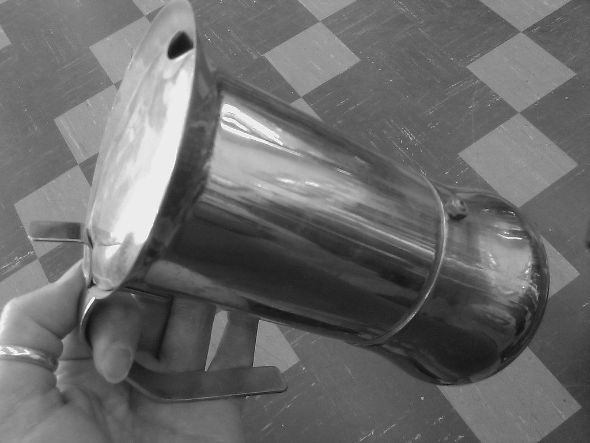

Qué está pasando realmente
Un turista termina de almorzar en una trattoria italiana, satisfecho con su plato de pasta, y decide cerrar la comida pidiendo lo que en su país sería de lo más normal: un capuchino cremoso. El camarero lo anota sin decir nada —los italianos rara vez corrigen abiertamente a un extranjero—, pero es probable que, por dentro, se sorprenda un poco. En Italia, el capuchino es, casi sin excepción, una bebida de mañana, y pedirlo después de las doce del mediodía, y mucho menos después de una comida, rompe una de las reglas gastronómicas no escritas más firmes del país.
La explicación más citada tiene que ver con la digestión. Según la tradición popular italiana, la leche —ingrediente central del capuchino, junto con el espresso y la espuma de leche vaporizada— es considerada un alimento pesado, casi una comida en sí misma más que una simple bebida de acompañamiento. Tomarla después de una comida abundante, que ya incluyó pasta, pan, carne o pescado, se percibe como sobrecargar innecesariamente el estómago con algo que el cuerpo no necesita en ese momento del día. El espresso solo, en cambio, se considera ligero, digestivo y perfecto para cerrar una comida sin pesadez añadida.
Esta lógica digestiva convive con una estructura horaria del café muy definida en la cultura italiana, que organiza distintos tipos de bebida según el momento del día casi con la misma precisión que un horario de comidas. El capuchino, junto al caffè latte y el cappuccino con cacao o canela, pertenece claramente a la colazione, el desayuno italiano, que suele ser ligero: un café con leche acompañado de un cruasán (cornetto) dulce, consumido de pie en la barra de un bar antes de las diez de la mañana. Pasado ese horario, el protagonista indiscutible pasa a ser el espresso, corto, intenso, tomado en segundos junto a la barra.
Para muchos italianos, pedir un capuchino después de las once de la mañana suena tan fuera de lugar como pedir cereales con leche para cenar.
De dónde viene todo esto
Este orden no es simplemente una preferencia de sabor: forma parte de una identidad cultural que Italia defiende con un orgullo casi filosófico frente a lo que percibe como "malas interpretaciones" internacionales del café italiano. No es casualidad que cadenas internacionales como Starbucks, que sirven capuchinos y bebidas con leche a cualquier hora del día, tardaran mucho más en expandirse dentro de Italia que en el resto del mundo, y que su llegada generara un debate público sobre la "autenticidad" del café cuando finalmente abrieron su primera tienda en Milán.
La cultura del café en Italia tiene, además, sus propios rituales de consumo que sorprenden a extranjeros por su rapidez y su informalidad estructurada: el espresso se toma de pie, en la barra, en cuestión de segundos, casi como una pausa funcional dentro del ritmo del día, no como una experiencia prolongada de sobremesa. Sentarse en una mesa para tomar el mismo café puede costar el doble o el triple, porque implica "alquilar" el espacio y el tiempo del camarero, una diferencia de precio que sorprende mucho a los visitantes primerizos que no conocen la costumbre.
Más allá de lo básico
Curiosamente, esta rigidez horaria no aplica de la misma manera a los turistas dentro de las zonas más visitadas del país: la mayoría de los baristas italianos, acostumbrados al flujo constante de visitantes internacionales, sirven capuchinos a cualquier hora sin comentario alguno, especialmente en ciudades como Roma, Florencia o Venecia. La regla sigue viva, sobre todo, como una norma social entre italianos y como un pequeño código de identidad cultural, más que como una prohibición estricta impuesta a quien desconoce la costumbre.
El bar de café italiano moderno, tal como lo conocemos, es una invención relativamente reciente: tomó forma después de 1948, cuando Achille Gaggia patentó una máquina que usaba una palanca de pistón por resorte para forzar el agua a través del café a alta presión, creando la crema que define a un espresso correcto hasta hoy. Antes de que la máquina de Gaggia se extendiera por los cafés italianos en la década de 1950, la marcada diferencia entre el café de mañana y el de tarde que existe hoy todavía no se había cristalizado del todo: la regla del capuchino, en otras palabras, es una tradición del siglo XX, no una costumbre milenaria.
Nápoles tiene su propio giro particular en la cultura del café, y vale la pena conocerlo: el caffè sospeso, o "café suspendido", una práctica en la que un cliente paga por dos espressos pero solo se toma uno, dejando el segundo ya pagado para un desconocido que no pueda costeárselo. La costumbre, nacida en los cafés populares napolitanos a mediados del siglo XX, ha sido revivida en los últimos años por cafeterías de todo el mundo inspiradas en la idea, prueba de que la cultura del café italiano exporta mucho más que la regla del capuchino.

Qué debes saber si viajas
Algunos consejos para pedir café como un local en Italia:
- Pide espresso o macchiato después de cualquier comida: el capuchino es seguro solo antes del mediodía.
- Tomarlo de pie en la barra (al banco) es más barato que sentarse en una mesa: pregunta "¿al banco?" si el presupuesto importa.
- Nadie te va a detener si rompes la regla, pero espera una sonrisa cómplice del barista.
- Si te encanta el café con leche a cualquier hora, pide un "caffè latte" discretamente y nadie se inmutará fuera de los lugares más tradicionales.
- Pedir un "cappuccino scuro" (extra fuerte) o "cappuccino chiaro" (extra suave) en el desayuno es una personalización totalmente normal, siempre antes del mediodía.
El panorama completo
Al final, esta pequeña regla sobre el capuchino resume bastante bien cómo Italia entiende la comida en general: no como una simple cuestión de gusto personal, sino como un sistema con lógica, historia y ritmo propio, transmitido de generación en generación casi sin necesidad de explicarlo en voz alta. Para un italiano, saber cuándo (no) pedir un capuchino no es una regla arbitraria de etiqueta: es una forma más de honrar siglos de cultura cafetera que el país considera, con razón, una de sus contribuciones más queridas al mundo.
¿Tienes curiosidad por saber cómo culturas cercanas manejan reglas parecidas? No te pierdas nuestros artículos sobre Por qué pedir la cuenta rápido en un restaurante francés casi ofende y Romper platos: la fiesta griega que empieza con un pequeño desastre.